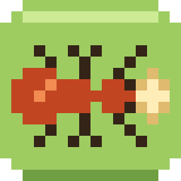

搬食物的螞蟻
exception games 推出的一款以蟻群為主題的 iPhone 邏輯解謎遊戲。
沿著橫列和直行發出訊號，讓螞蟻走過泥土和葉子，把每隻螞蟻帶回蟻窩。四章共五十個精心設計的工坊，每天都有新的今日工坊，每個工坊裡還藏著一個秘密。
為全家人設計：卡關時有提示，每種新格子都有循序漸進的介紹，為還不識字的孩子朗讀說明，一台 iPhone 可供多位玩家使用。
沒有廣告，沒有用真錢購買的項目，沒有帳號，沒有計時器。不需要連網。

exception games 推出的一款以蟻群為主題的 iPhone 邏輯解謎遊戲。
沿著橫列和直行發出訊號，讓螞蟻走過泥土和葉子，把每隻螞蟻帶回蟻窩。四章共五十個精心設計的工坊，每天都有新的今日工坊，每個工坊裡還藏著一個秘密。
為全家人設計：卡關時有提示，每種新格子都有循序漸進的介紹，為還不識字的孩子朗讀說明，一台 iPhone 可供多位玩家使用。
沒有廣告，沒有用真錢購買的項目，沒有帳號，沒有計時器。不需要連網。